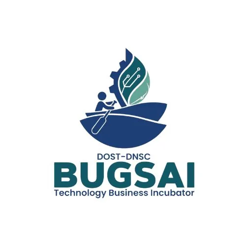

DNSC BUGSAI Technology Business Incubator
Davao del Norte State College (DNSC) · Region XI
DNSC BUGSAI (Blue Economy Underpinning Global Sustainability through Adaptive Innovations) Technology Business Incubator is hosted by Davao del Norte State College in Panabo City, Davao del Norte and serves Region XI (Davao Region). Established with a ₱13.4 million grant from DOST-PCIEERD under the HEIRIT Program, BUGSAI TBI was formally launched on March 20, 2025 — making it the first Blue Economy-focused incubator in Davao del Norte and the first TBI hosted by a fisheries school in the region.
- Category
- Technology Business Incubator
- Host institution
- Davao del Norte State College (DNSC)
- City
- Panabo City, Davao del Norte
- Region
- Region XI
- Operating status
- Operating
About the Center
BUGSAI TBI is committed to supporting and launching startups focused on marine and aquatic business ventures that align with global Blue Economy sustainability goals. The Blue Economy — which covers the sustainable use of ocean, marine, and freshwater resources for economic growth, improved livelihoods, and ocean health — is the organizing framework for all of BUGSAI's incubation activities. This positions DNSC, with its fisheries heritage, as a natural hub for coastal and marine entrepreneurship in Mindanao.
The center runs the Lawig Business Incubation Program for its inaugural cohort of startups and hosts the BE Dujali Lecture Series to build a regional culture of Blue Economy innovation and entrepreneurship. DNSC's vision is to become a leading institution in agri-fisheries and sustainable social development in ASEAN — and BUGSAI TBI is its flagship vehicle for translating that vision into commercial enterprise.
Programs & Services
- Blue Economy Startup Incubation — Dedicated support for sustainable marine and aquatic business ventures — including marine aquaculture, coastal resource management, seafood processing, and marine biotechnology
- Research & Marine Technology Collaboration — Partnerships with academic and industry partners for research commercialization, technological development, and scientific validation of marine-based product innovations
- Business Development & Pitching Support — Mentorship in business model development, financial planning, market strategy, and investor pitching for Blue Economy startup founders
- DOST Funding & Marine Industry Linkages — Facilitation of access to DOST-PCIEERD startup grants, BFAR programs, and industry networks in the fisheries, aquaculture, and marine sectors
Contact
Sources & references
- dnsc.edu.ph/dnsc-formally-launches-bugsai-tbi-to-boost-blue-economy
- region11.dost.gov.ph/index.php/1319-dost-dnsc-make-waves-with-first-blue-ec…
- pia.gov.ph/davao-del-norte-state-college-at-the-forefront-of-blue-economy
Details are drawn from public records and the sources above, July 2026.
Startupreneur Innovation Hub · synced from the Notion catalog (July 2026) · status: published.